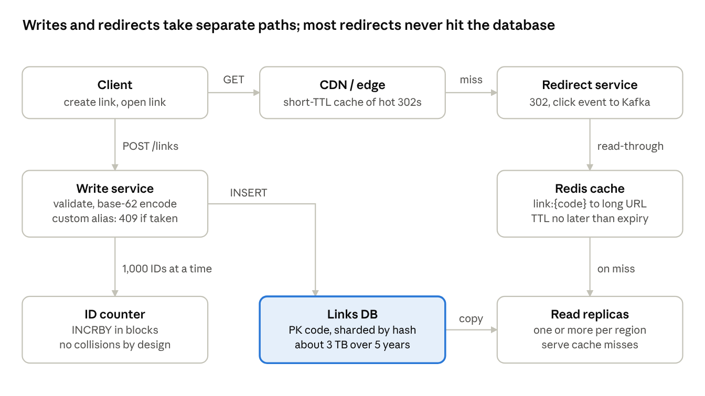

Understanding the problem
A URL shortener turns a long link into a short one (sho.rt/aZ3kP9) and redirects anyone who opens it. It's the classic warm-up question, so the bar is high on polish: interviewers expect you to finish the basics fast and spend most of the time on the deep dives.
Functional requirements
Core:
Create a short URL for a long URL.
Opening the short URL redirects to the long URL.
Optional custom alias (
sho.rt/winter-event) and optional expiry.
Below the line: user accounts and editing links, detailed analytics dashboards, spam and malware scanning.
Non-functional requirements
Unique: a short code maps to exactly one long URL.
Fast redirects: under ~50 ms.
Highly available: reads matter most; a broken redirect is a broken link everywhere it was shared.
Scale: ~100M new links a month (~40/s average) and ~1B redirects a day (~12K/s average, ~100K/s peak). Reads outnumber writes about 1000 to 1.
Storage: 100M links × ~500 bytes × 12 months × 5 years ≈ 3 TB.
The set-up
Core entities
Link: short code, long URL, creator, created_at, expires_at.
User: who created it (for rate limits and ownership).
API
POST /links { "long_url": "https://…", "custom_alias": "winter-event", "expires_at": "…" }
→ 201 { "short_url": "https://sho.rt/aZ3kP9" }
GET /{code}
→ 302 Found, Location: https://… // 404 if unknown or expired301 vs 302, a classic follow-up: a 301 (permanent) lets browsers cache the redirect, which is faster but means later requests never reach you, so you lose click counts and can't change or expire the link. A 302 (temporary) sends every click through you. Pick 302 for control and analytics, and say why.
High-level design
1. Create a short URL
A Write service validates the long URL, generates a short code (deep dive 1), and stores it:
CREATE TABLE links (
code VARCHAR(10) PRIMARY KEY,
long_url TEXT NOT NULL,
user_id BIGINT,
created_at TIMESTAMP,
expires_at TIMESTAMP
);A custom alias is just a chosen code: INSERT … ON CONFLICT DO NOTHING and return 409 if it's taken. The primary key enforces uniqueness for free.
2. Redirect
A separate Redirect service (reads and writes scale very differently, so split them) handles GET /{code}: look up the code, check expiry, return a 302 with the long URL. With ~100K redirects/s at peak, it reads through a Redis cache (link:{code} → long_url, with a TTL), falling back to the database on a miss.
3. Expiry
Check expires_at on every redirect (cheap, it's in the row). Set the cache TTL to no later than the expiry. A background job deletes expired rows later; correctness doesn't depend on it.
4. Click analytics (if asked)
The redirect service publishes a click event to Kafka (asynchronously, never slowing the redirect); a consumer aggregates counts per code per hour.
Potential deep dives
1. Generating unique short codes
Seven base-62 characters (a–z A–Z 0–9) give 62⁷ ≈ 3.5 trillion codes, far more than the ~6B links in 5 years. Say this math out loud.
Bad solution: hash the long URL and take 7 characters. base62(md5(long_url))[:7]. Two different URLs can collide on the first 7 characters, so you must check and retry. The same URL always gives the same code, which may or may not be wanted.
Good solution: random code + uniqueness check. Generate 7 random characters and insert; on a primary-key conflict, try again. With 3.5 trillion codes and billions used, collisions are rare, but each create costs a database round trip and the retry logic must be right.
Great solution: a counter, encoded in base 62. A global counter gives each new link a unique integer; base-62 encode it (125 → "21"). No collisions by construction. To avoid one counter becoming a bottleneck, each write server grabs a block of 1,000 IDs at a time from a counter in Redis (INCRBY link:counter 1000) or a database sequence, then hands them out from memory. If a server crashes, it wastes at most part of a block, which is fine. Concern: sequential codes are guessable. If that matters, scramble the integer with a reversible bijection (multiply by a large prime mod 62⁷) before encoding.
2. Fast redirects at 100K/s
Bad: every redirect hits the database. ~100K reads/s on one database is too much, and latency is higher.
Good: a Redis cache in front, read-through with a TTL. Links follow a power law (a few are clicked a lot), so the hit rate is very high.
Great: Redis plus a CDN or edge layer: the edge can cache the 302 response for popular codes for a short time, answering most redirects close to the user without touching your servers. Plus read replicas for the database misses. Mention the trade-off: edge caching makes exact click counts and instant link deletion harder, so keep the edge TTL short.
3. Scaling storage and writes
Writes are tiny (~40/s average). Storage (~3 TB over 5 years) fits on one big database, but shard by code (hash) when it grows, since every lookup is by code. Replicate across regions for availability; a redirect can be served from any region's replica.
4. Abuse
Rate-limit creation per user and per IP; scan long URLs against a malware/phishing blocklist asynchronously and disable bad codes. Mention it briefly. It's a real concern for a platform with many young users.
Final design

Creates go to the write service, which takes IDs from the counter in blocks, base-62 encodes them and inserts the link. Redirects go through the edge cache, then the redirect service, Redis, and finally a read replica, so the primary database almost never sees redirect traffic.
What's expected at each level
Mid-level. A table, a code generator, a cache, a 302. Should reach a collision-free generation approach with some guidance.
Senior. Finishes the basics in ~15 minutes. Compares hash vs random vs counter, does the 62⁷ math, explains counter blocks. Splits read and write paths, caches with Redis and possibly the edge, and covers 301 vs 302, expiry and abuse. Drives into the deep dives without being asked.
Staff+. Multi-region active-active redirects, guessability vs simplicity trade-offs, cost of edge caching vs analytics accuracy, and an operational story.
Pacing tip: reach the deep dives
A common way to fail this question is to go smoothly through the basics, get nods the whole time, and never reach the topic the interviewer was waiting for. To avoid that:
Finish the basics fast (by ~minute 15) to leave room.
Offer a menu, then let them pick: "The interesting parts are generating unique codes, redirect latency at 100K/s, and scaling storage. Which would you like me to go deeper on?"
Check in every ~10 minutes: "Is this the level of detail you're looking for?"
If they stay silent, cover all three deep dives briefly rather than one in great depth.